外付け端子の配線図 19
ESP32だけU3のソケットへ。R-78・ジャック・押しボタンなどは線で接続します。
配線と導通測定はUSB・9Vを抜いて行う。ジャック・ボタンの現物端子は未確認です。下の特定手順で確認できるまで、はんだ付け・通電しないでください。
楽器 → INPUTジャック → J2 ／ J5 → OUTPUTジャック → アンプのINPUT
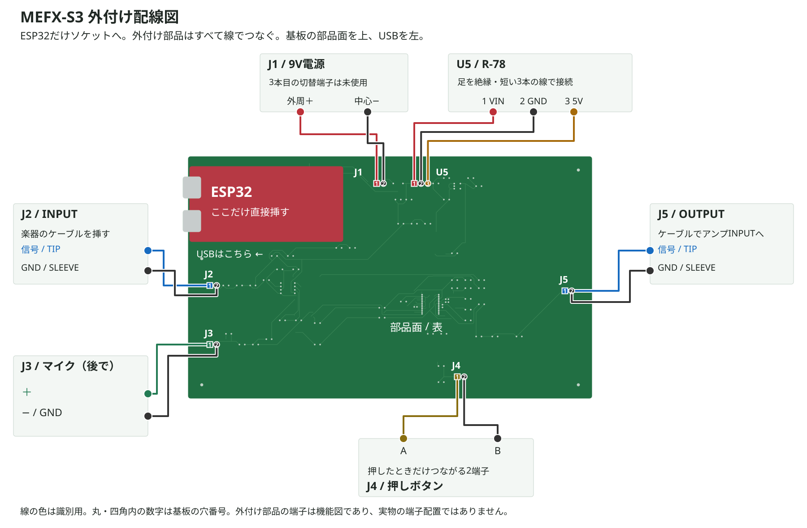
画像を押すと拡大表示。すべて部品面・USB左。裏面から見ると左右が逆です。線の経路は説明用で、実際の長さではありません。
J2 INPUT / 楽器から
ギター・ベース → シールドケーブル → INPUT
- J2-1INPUT_TIP→TIP：プラグの先端と導通
- J2-2GND→SLEEVE：プラグの根元と導通
- プラグをジャックに挿し、電源OFFで導通を調べる。
- ジャックの端子を左右や長さだけで決めない。
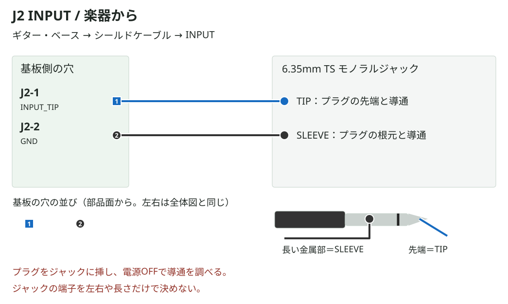
J5 OUTPUT / アンプへ
OUTPUT → シールドケーブル → アンプのINPUT
- J5-1OUTPUT_TIP→TIP：プラグの先端と導通
- J5-2GND→SLEEVE：プラグの根元と導通
- アンプのスピーカー出力にはつながない。
- ヘッドホン・スピーカーを直接駆動する出力ではない。
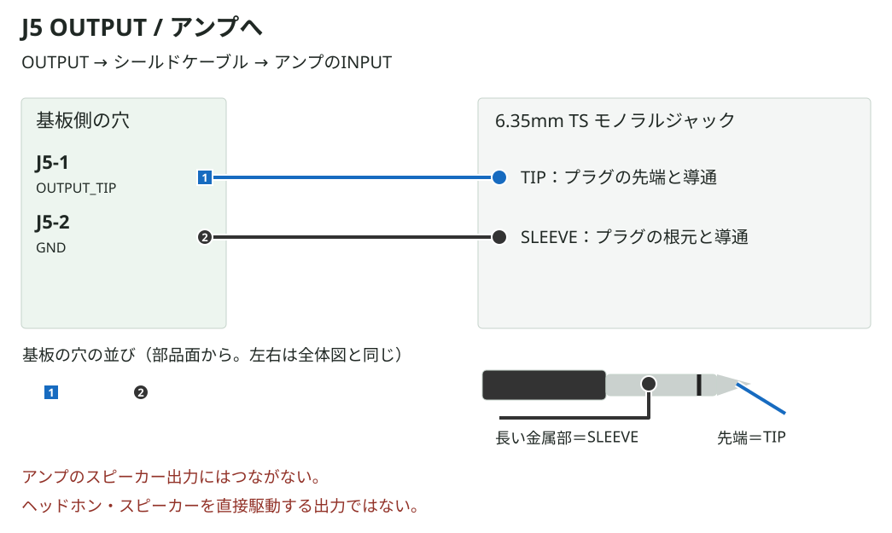
J1 9V電源 / センターマイナス
9V DCアダプター → DCジャック → J1
- J1-1+9V_RAW→プラグ外周と導通する端子（＋）
- J1-2GND→プラグ中心と導通する端子（−）
- 未通電のプラグを挿して、中心・外周との導通を確認。
- 3本目のスイッチ端子は未接続。USBと9Vは同時接続しない。
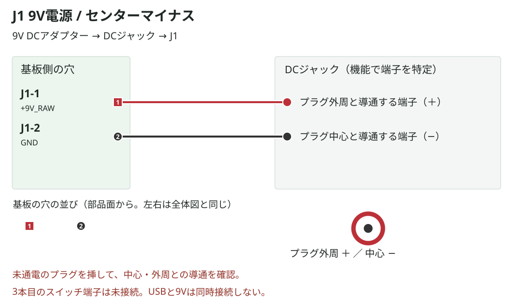
U5 R-78 / 9Vから5Vへ
R-78も基板へ挿さず、3本の線でつなぐ
- U5-1+9V_PROT→Pin 1 / VIN
- U5-2GND→Pin 2 / GND
- U5-3+5V→Pin 3 / VOUT（5V）
- 足ごとに熱収縮チューブ等で絶縁し、本体を固定する。
- 配線はできるだけ短く。延長による安定性・ノイズは実機確認。
型番の印字が読める面を手前、足を下にすると、左から1：VIN、2：GND、3：5V出力。 R-78E5.0-1.0以外には流用しないでください。
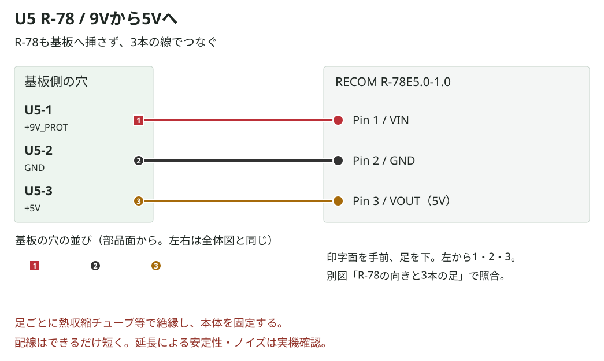
J4 押しボタン / エフェクト切替
J4の2本 → 押しボタンの接点A・B
- J4-1FOOTSW_GPIO→接点A（極性なし）
- J4-2GND→接点B（極性なし）
- 4本足でも、未押下で非導通・押下時だけ導通する2本を使う。
- 常に導通する2本は不可。残り2本はつながない。
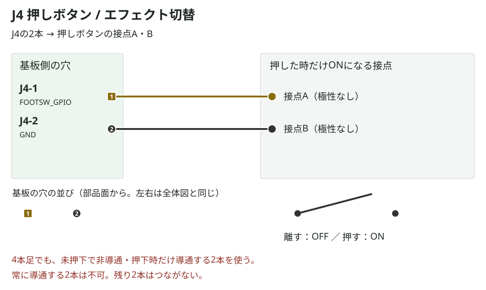
J3 マイク / 後で接続
音出しの初回確認では未接続でよい
- J3-1MIC_BIAS→マイク ＋
- J3-2GND→マイク −
- 現物の極性表示・仕様書を確認して接続。
- ギターはJ3ではなく、J2のINPUTへつなぐ。
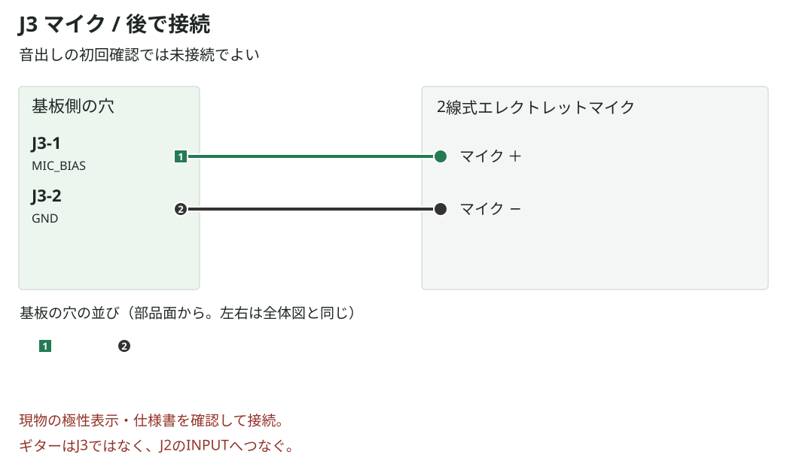
R-78の向きと3本の足
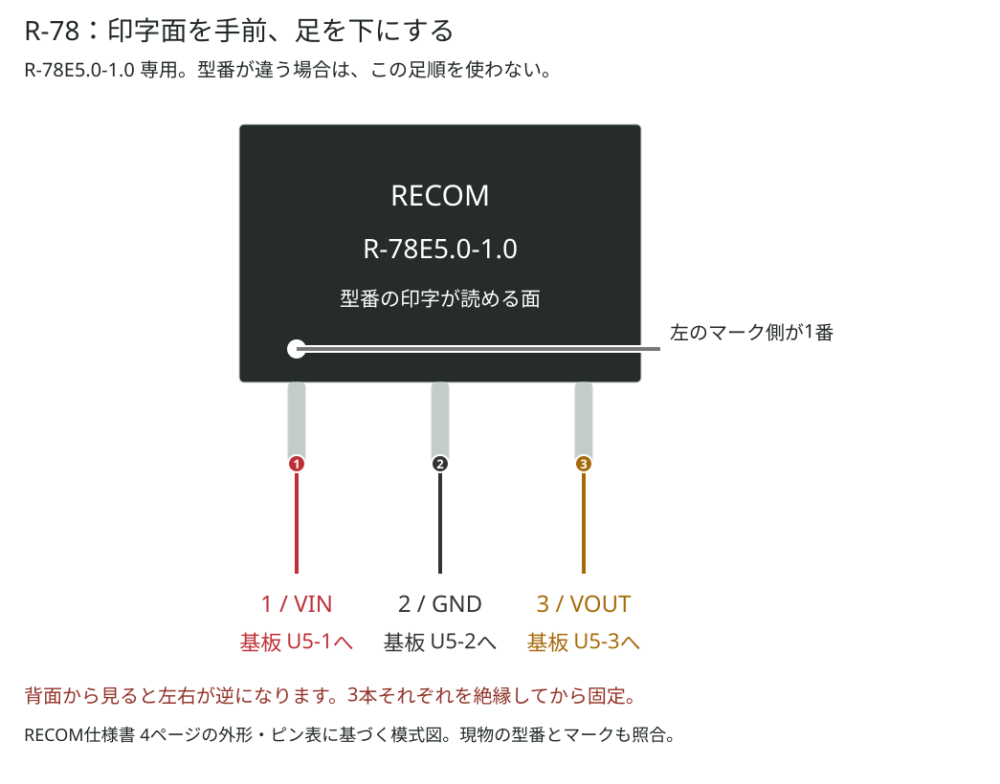
印字面を手前・足を下。左1 → U5-1、中央2 → U5-2、右3 → U5-3。背面から見ると左右が逆です。
ジャックの導通確認
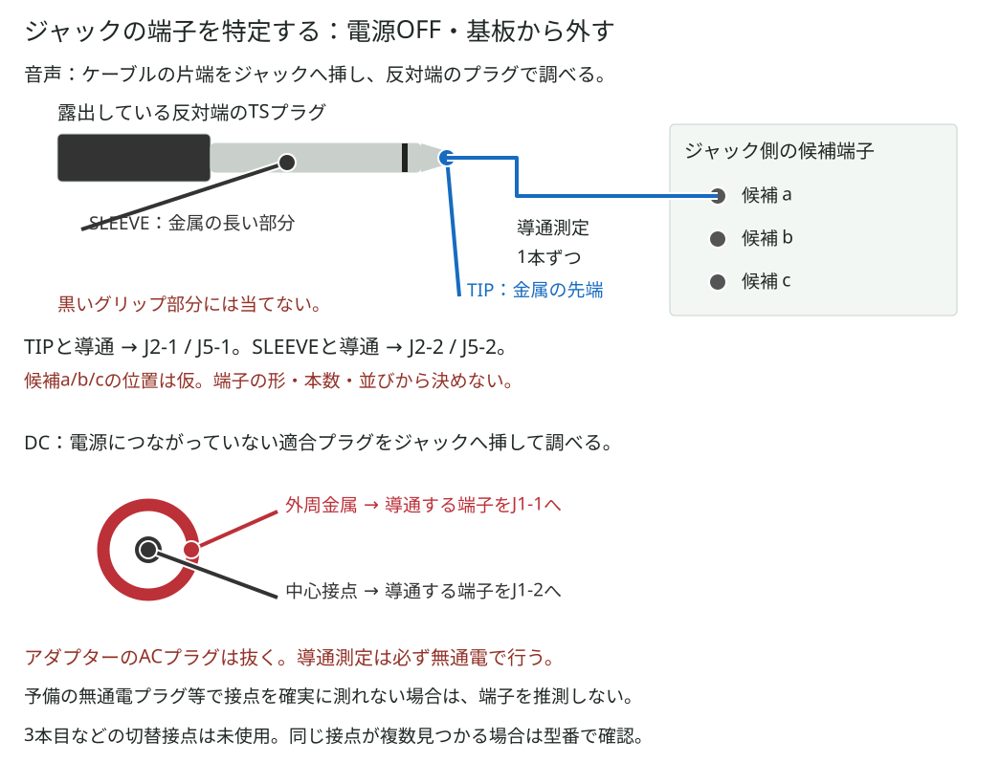
- 音声ジャックにケーブルの片端を挿します。反対端のプラグの金属の先端がTIP、絶縁リングより根元側の長い金属部がSLEEVEです。黒いグリップは測定しません。
- テスターを導通モードにして、一方をTIP、他方をジャックの候補端子へ順に当てます。導通する端子をTIPと記録。SLEEVEも同様に記録します。
- DCジャックは無通電の適合プラグで中心・外周と各端子の導通を調べます。ACから切り離し、通電中に導通モードを使わないでください。
- 同じ接点が複数見つかる、端子が測れない、切替端子を区別できない場合は、型番・写真で確認するまで止めます。
4本足ボタンの接点確認
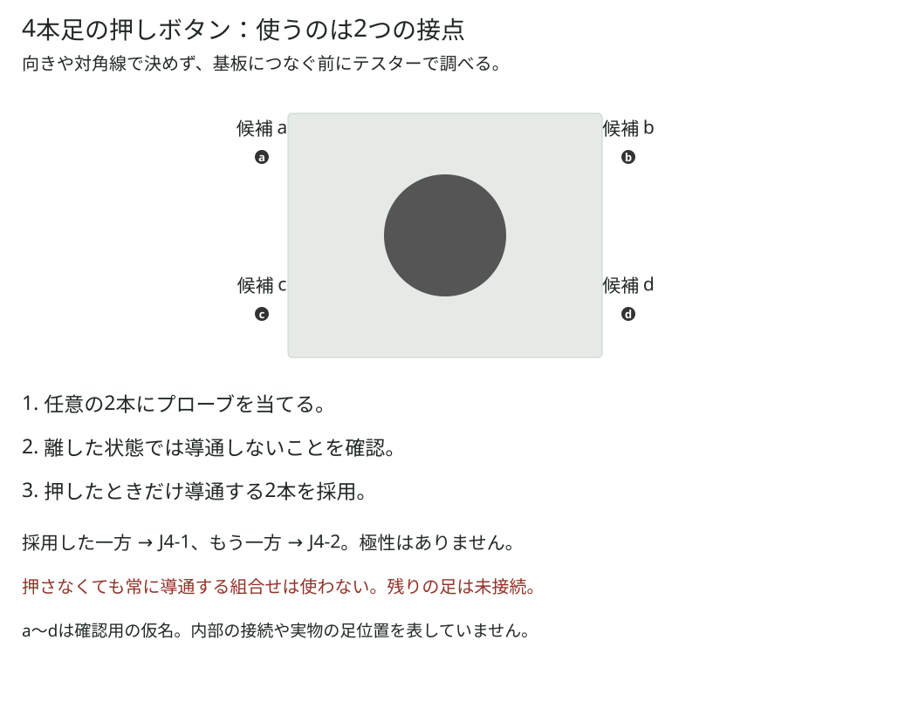
- 任意の2本にプローブを当て、離しているときは非導通、押す間だけ導通することを確認。
- その2本をJ4-1とJ4-2へ。常に導通する2本は使わず、残りの足は未接続。
初回通電前：ここまでは電源OFF
- USB・9V・楽器・アンプをすべて外し、ESP32もソケットから外す。基板に残るICも誤配線で壊れるため、ESP32を外すだけでは保護できません。
- 部品面と裏面を見て、はんだブリッジ・飛び出した芯線・極性・穴番号を確認。R-78の3本を1本ずつ追い、足ごとに絶縁する。
- テスターのリードは黒＝COM、赤＝V/Ωへ。無通電で抵抗／導通モードを使用し、J1-1とJ1-2、U5-1とU5-2、U5-2とU5-3、U5-1とU5-3の間に意図しない短絡がないか確認。
- コンデンサの充電で一時的に鳴ることがあります。ほぼ0Ωが持続する・結果を判断できない場合は通電しない。ブザーが鳴らないだけで配線の正しさは保証されません。
- 外付けの線は短くし、引張りがはんだ部分に伝わらないよう固定。音声配線は電源配線から離す。
電圧測定：5Vと3.3Vを確認
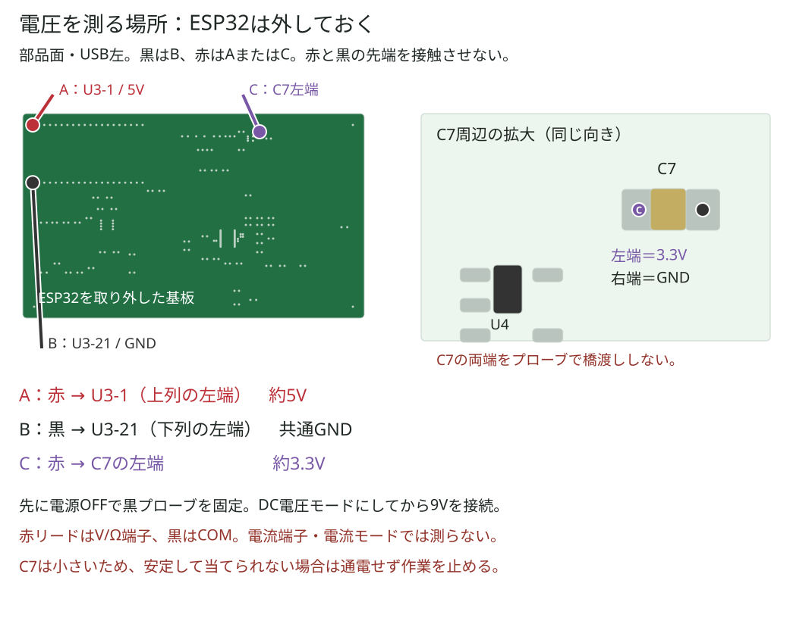
- 黒：BU3-21 / GND＋赤：A / U3-1
期待値：約5V - 黒：BU3-21 / GND＋赤：C / C7左端
期待値：約3.3V
- 電源OFFのまま黒プローブをBへ固定。ESP32は外したまま、赤リードをV/Ω端子、黒をCOM端子にし、テスターをDC電圧モードへ切り替える。電流端子・電流モードを使わない。
- 配線と9Vセンターマイナス電源を再確認してから9Vのみを接続。赤でA、Cを順に測る。C7の左右を先端で橋渡ししない。安全に固定できなければ通電せず、測定に慣れた人に確認を頼む。
- 値が大きく違う、電圧が不安定、異臭・異常発熱がある場合はすぐ電源を外す。異常があれば次へ進まない。
- 9Vを外し、残留電圧が下がったことを確認してESP32を装着。端子を短絡させて放電しない。信号・音出しの確認は電源チェック後に行う。
書込み時は9Vを抜いてからESP32を基板から外し、ESP32単体をUSBにつなぎます。基板上でUSB単独給電する場合の逆流安全性は未確認です。
確認範囲
基板13接続と測定点のネット・座標は現行KiCadデータと照合。図の表示確認は実機の導通・電圧・音出し確認とは別です。R-78延長配線での安定性・ノイズは未確認です。
基板・Gerber・ファームウェアは変更していません。保存済みR-78仕様書4ページ ／ RECOM公式仕様書 ／ ESP32のソケット・3Dガイド18